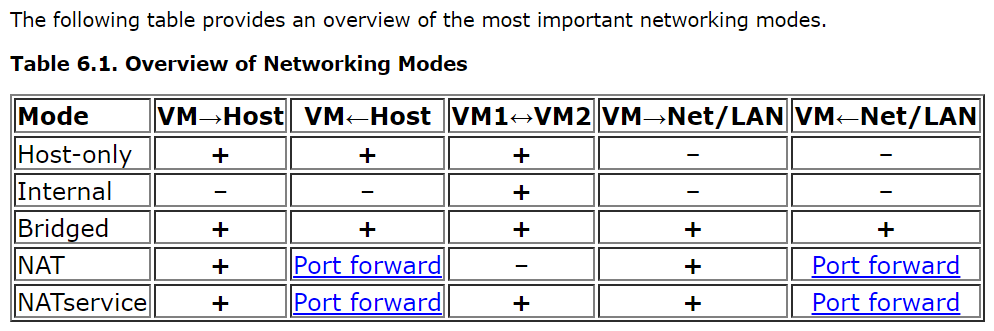

Windows 11 Gaming VM with GPU Passthrough on Fedora Linux

After completing this guide, you will have a Windows 11 headless virtual machine that can be accessed via:
- Moonlight/Steam Link for high performance gaming, using Sunshine stream
- Remote Desktop (RDP) access for less demanding tasks
- RDP over a web browser (via Apache Guacamole)
Prerequisites:
-
Ensure you have a CPU with virtualization support (for Intel, this is known as
VT-d): -
NVIDIA GPU (for Moonlight streaming)
-
VT-dshould be enabled in your BIOS (refer to the relevant manuals) -
Docker is installed
-
Windows 11 Pro license (required for Remote Desktop)
1. Setup GPU Passthrough
Enable IOMMU
Open /etc/default/grub with your editor of choice, and append intel_iommu=on as well as initcall_blacklist=sysfb_init to GRUB_CMDLINE_LINUX:
GRUB_CMDLINE_LINUX="resume=UUID=16671cec-3bb8-46bb-b931-083c93082763 rhgb quiet intel_iommu=on initcall_blacklist=sysfb_init"
What is the purpose of initcall_blacklist=sysfb_init?
Even with the vfio-pci drivers utilized, the kernel appears to reserve portions of memory in the GPU which causes errors visible in dmesg as [ 6044.433981] vfio-pci 0000:07:00.0: BAR 0: can't reserve [mem 0xe0000000-0xefffffff 64bit pref].
The culprits for my system appeared to be simplefb and bootfb.
Adding the above kernel parameter fixes the issue.
Optionally, you may want to disable os-prober especially if you have Docker installed, as it will attempt to probe containers and create a lot of unnecessary startup entries:
Save the modified configuration file:
Configure vfio-pci module to load on boot
Create the following files with the content as shown (you will need superuser privileges):
#/etc/dracut.conf.d/10-vfio.conf
add_drivers+=" vfio_pci vfio vfio_iommu_type1 vfio_virqfd "
#/etc/modules-load.d/vfio-pci.conf
vfio-pci
#/etc/modprobe.d/vfio.conf
options vfio-pci ids=<GPU-PCI-ID>
Where <GPU-PCI-ID> is the id xxxx:xxxx as shown by the output of lspci -nn, for example:
[root@server ~]# lspci -nn | grep -i vga
01:00.0 VGA compatible controller [0300]: NVIDIA Corporation GP104 [GeForce GTX 1070 Ti] [10de:1b82] (rev a1)
You will need to rebuild the initial ramdisk (initrd) image after modifying the above files:
Check that the generated ramdisk contains output similar to the following using lsinitrd:
[root@server ~]# lsinitrd | grep -i vfio
-rw-r--r-- 1 root root 31 Mar 30 16:53 etc/modprobe.d/vfio.conf
-rw-r--r-- 1 root root 9 Mar 30 16:53 etc/modules-load.d/vfio-pci.conf
drwxr-xr-x 1 root root 0 Mar 30 16:53 usr/lib/modules/5.18.18-200.fc36.x86_64/kernel/drivers/vfio
<truncated>
Now reboot, and check that IOMMU is working:
$ dmesg | grep -i iommu
[ 0.000000] Command line: BOOT_IMAGE=(hd4,gpt4)/vmlinuz-5.18.10-200.fc36.x86_64 root=UUID=2a1d4d2a-7016-4f91-aa55-92d1b284668d ro rootflags=subvol=root resume=UUID=16671cec-3bb8-46bb-b931-083c93082763 rhgb quiet intel_iommu=on
[ 0.133682] Kernel command line: BOOT_IMAGE=(hd4,gpt4)/vmlinuz-5.18.10-200.fc36.x86_64 root=UUID=2a1d4d2a-7016-4f91-aa55-92d1b284668d ro rootflags=subvol=root resume=UUID=16671cec-3bb8-46bb-b931-083c93082763 rhgb quiet intel_iommu=on
[ 0.133749] DMAR: IOMMU enabled
[ 0.224446] DMAR-IR: IOAPIC id 2 under DRHD base 0xfed91000 IOMMU 0
[ 1.516533] iommu: Default domain type: Translated
[ 1.516533] iommu: DMA domain TLB invalidation policy: lazy mode
[ 1.560968] pci 0000:00:00.0: Adding to iommu group 0
[ 1.560977] pci 0000:00:01.0: Adding to iommu group 1
[ 1.560985] pci 0000:00:06.0: Adding to iommu group 2
[ 1.560991] pci 0000:00:0a.0: Adding to iommu group 3
[ 1.561003] pci 0000:00:14.0: Adding to iommu group 4
If you do not see the ... Adding to iommu group lines, ensure VT-d has been turned on in your BIOS.
2. Install Virtualization Packages
This will install the necessary packages, including libvirt, an API to manage QEMU/KVM hypervisors.
3. Setup virt-manager in Docker
We will use virt-manager to manage the libvirtd backend. To make access easier, we will use docker-virt-manager, which exposes virt-manager over a GTK3 Broadway (HTML5) backend.
Create a docker-compose.yml file with the following content:
services:
virt-manager:
image: mber5/virt-manager:latest
restart: always
environment:
HOSTS: "['qemu:///system']"
ports:
- "8080:80"
volumes:
- "/var/run/libvirt/libvirt-sock:/var/run/libvirt/libvirt-sock"
- "/vm:/vm" # Or wherever you want to store your VM images/virtual harddisks
devices:
- "/dev/kvm:/dev/kvm"
Start the container with docker compose up -d.
4. Install Windows and setup streaming
Now, navigate to http://localhost:8080 and you should see the virt-manager interface:
{kind=link}
Create a new VM, and under Add Hardware > PCI Host Device, add your GPU.
Giving the VM an IP address on the LAN
If you would like your VM also have its own IP address on the LAN (e.g. to play multiplayer games with peers on the same subnet), you can add a macvtap interface now, in addition to the standard bridge network between guest and host.
To do this, add another NIC and ensure Host device enpXsX: macvtap is selected.
{kind=link}
If you just want to be able to access the VM over the internet, you can use a peer-to-peer VPN as shown below.
Next, install Windows 11 (you can get the ISO from here).
Error: This PC doesn't meet the minimum system requirements to install this version of Windows
You may encounter the error This PC doesn't meet the minimum system requirements to install this version of Windows. You can try this fix, or alternatively:
- Press Shift+F10 to open a command prompt
- Type
regedit - Navigate to
HKLM\System\Setup\LabConfig(create the key if it doesn't exist) - Add the following registry values (
DWORD (32-bit) Value) with1as the value:BypassTPMCheckBypassSecureBootCheckBypassCPUCheck(optional)BypassRAMCheck(optional)
Once the Windows VM boots, install the NVIDIA drivers, and then ensure that the GPU is detected by the VM.

Next, install Sunshine, the streaming server. Follow the instructions on the website.
What about NVIDIA Gamestream?
I was previously recommending NVIDIA Gamestream. However, Sunshine stream has better performance, and more importantly, the PIN code can be keyed in via a convenient web interface.
5. Setup Overlay Mesh Network (aka Peer-to-Peer VPN)
We will now setup a peer-to-peer VPN, which will let us access our server anywhere in the world, without worrying about port forwarding or firewall configurations.
Technical Info
Moonlight requires certain ports to be forwarded on your router, in order for the PC to be accessible over the internet.
However, in our current setup, the VM is not directly accessible from the internet or even the LAN, because the default network1 it is connected to is not assigned an IP address on the LAN, so there is no way to port forward the required ports.
One way is to give the VM its own IP address on the network via a macvtap interface, as shown above.
However, sometimes port forwarding may not work due to NATs, your ISP blocking ports, or firewalls.
Therefore, a better solution is to use a peer-to-peer VPN provider, which utilizes NAT traversal techniques such as UDP hole punching to connect to hosts behind NATs/firewalls.
- Tailscale: Windows, Linux and Android clients. Easiest to setup.
- ZeroTier: Similar to Tailscale
- Nebula: open-source
- Netmaker: open-source, claims to be the fastest
Latency is minimal, as these tools connect directly if possible, using a relay only as a backup.
I recommend using Tailscale.
After setting up the peer-to-peer VPN of your choice, download the Moonlight client on another computer/device, and verify that streaming works.
You can also setup Remote Desktop now.
Now, you have a working VM with Moonlight for gaming, and Remote Desktop (slower, but much less data usage) for doing work!
6. Setup Apache Guacamole

Apache Guacamole is a clientless remote desktop gateway, supporting proxying of RDP and VNC protocols over a HTML5 frontend. For this guide, we will use RDP, as it is more efficient than VNC and saves data.
Of note, Guacamole also supports SSH connections to a remote server, displaying the terminal in the web browser. However, the current version (1.4.0) of the Apache Guacamole Server Docker image only supports connecting via ssh-rsa and ssh-dss, both of which have been deprecated since OpenSSH 8.8 (JIRA issue) due to security issues (SHA-1 is no longer considered secure). One workaround would be to enable ssh-rsa in sshd, however this is suboptimal. As a result, I have decided to use SSHwifty instead as an SSH web proxy.
To setup Apache Guacamole, follow the instructions here.
Notes
- I have decided to use the
mysqlbackend instead, as thepostgresbackend has authentication problems (slated to be fixed in1.5.0). - If you are using a reverse proxy with authentication (e.g. Nginx with
auth_request), you can use header authentication to avoid having to login into Guacamole. - To change the password of the default
guacadminuser, it is necessary to create another user account with admin rights. - For RDP, ensure
Ignore server certificateis checked, otherwise Guacamole will refuse to connect.
7. (Optional) Filesharing: VirtioFS/NFS/SAMBA
You may want to share a filesystem between the host and guest. There are several options, with [VirtioFS] being the fastest, followed by SAMBA, then Network File System (NFS).
Note: If you are using a macvtap interface (to allow the guest to receive its own IP address on the network), it is not possible to connect to the host due to how macvtap works. You will need to create a NAT connection (e.g. Virtual Network 'Default' : NAT) to connect to the host, via a separate subnet.
VirtioFS
This is the preferred way. The VirtioFS driver is included in the Linux kernel since 5.4.
Follow the instructions to set it up.
Note: support for multiple mount points doesn't appear ready.
NFS
NFS is a handy way to share files on a Linux host with other Linux clients. For sharing files with Windows clients, SAMBA is the better option (much less delay on opening compared to NFS).
Windows does not come with NFS support by default - you must enable it. In an elevated PowerShell window, run:
```powershell
Enable-WindowsOptionalFeature -FeatureName ServicesForNFS-ClientOnly, ClientForNFS-Infrastructure -Online -NoRestart
```
This fix may speed up NFS access on Windows (although I strongly recommend using SAMBA).
- For Fedora: You must also open the NFS ports (TCP/UDP
111,2049and20048) in theLibvirtzone.
SAMBA
SAMBA is much faster than NFS for Windows guests.
To setup Samba:
-
Install Samba on Linux:
-
Set the correct SELinux contexts/booleans for the directories you wish to share (in this example
/mnt/storage): -
Add the following to
/etc/samba/smb.conf:[storage] path = /mnt/storage public = yes guest ok = yes writable = yes browseable = yes acl allow execute always = yesThis will create a share named
storage, accessible without login or passwords. Only do this on a secure LAN! -
(For Fedora) Open the required ports in the
libvirtzone (for the Windows guest), and in thePubliczone for other computers on the network:- TCP
139,445 - UDP
137,138
- TCP
-
Restart the
smbandnmbdaemons:
You should now have access to the Samba share on the Windows guest, by hitting Win+R and entering the IP address of the host.
8. (Optional) Fix low FPS on desktop and certain games
Moonlight runs at 30fps or less when displaying the remote desktop (when not in a game). I suspect this is probably because the desktop is not rendered using the GPU and natively running at a lower FPS. Moonlight is transferring this output when the GPU is not being utilized, for example with the desktop or certain 2D games.
To fix this, you have 2 options.
Option 1: Virtual Display Driver
This requires more work, but no additional hardware is required.
Follow the instructions on this link.
Option 2: HDMI Dummy Plug
You will need to get an HDMI dummy plug.
- Plug the HDMI dummy plug into the graphics card output.
-
In the Windows VM, ensure that displays are set to mirror each other.
- You might need to play around with the displays a bit, to ensure that Moonlight is streaming the display from the GPU output, and not that of the VM.
-
You might need to reboot the VM after.
You should now be getting ~60fps when streaming the bare desktop.
Conclusion
And that's it! You now have a fully featured cloud gaming machine, accessible anywhere in the world.
Known Issues/Notes/Fixes
Disabling VFIO
At times you may want to disable VFIO or GPU passthrough, for example when you want to use the GPU in the host.
To disable GPU passthrough:
- Rename the file
/etc/modprobe.d/vfio-pci.confto/etc/modprobe.d/vfio-pci.conf.bak. - Rename the file
/etc/modules-load.d/vfio-pci.confto/etc/modules-load.d/vfio-pci.conf.bak. -
Add the following lines to
GRUB_CMDLINE_LINUXin/etc/default/grub: -
Regenerate
grub.cfgwithgrub2-mkconfig -o /boot/grub2/grub.cfg. - Regenerate the
initramfswithdracut -fv. - Reboot.
To re-enable GPU passthrough, reverse the steps above.
Moonlight-specific Issues
-
Moonlight requires that the server machine (whether VM or physical) be unlocked, and that there are no Remote Desktop Connections ongoing.
-
After an RDP session, the main desktop is locked. To fix this, create a batch file with the following content, and run it with administrator rights to disconnect the RDP and unlock the main desktop:
-
-
The streaming resolution of Moonlight is not what is set in the GUI of Moonlight or in the game, but rather, it is capped at the resolution of the virtual machine's desktop. So, if you want to stream in 4K, ensure you change the virtual machine's desktop resolution to 4K prior to launching the game.
-
Some useful shortcuts:
- Quit moonlight: Ctrl+Alt+Shift+Q
- Minimize window: Ctrl+Alt+Shift+D
- Show stats overlay: Ctrl+Alt+Shift+S
- Paste text from host: Ctrl+Alt+Shift+V
- Toggle mouse and keyboard capture: Ctrl+Alt+Shift+Z
-
Moonlight not filling screen:
-
Intermittent black screen: Disable hardware-accelerated GPU scheduling
QEMU/virt-manager
-
Snapshotting the VM is not possible while a PCI device is being passed-through. However, if you are using BtrFS, you can make snapshots of the storage volume.
-
VM hangs/pauses, and in
dmesgyou see[ 6044.433981] vfio-pci 0000:07:00.0: BAR 0: can't reserve [mem 0xe0000000-0xefffffff 64bit pref]and similar errors:- Ensure that the
initcall_blacklist=sysfb_initkernel parameter has been added togrub.cfg.
- Ensure that the
-
virt-manager/QEMU supports sharing the VM display via an embedded VNC server. For Apache Guacamole to connect to this however, the embedded viewer (invirt-manager) must first be closed. -
Windows XP only: In
virt-manager, the NIC device model must bertl8139, and the sound card model asAC97in order for drivers to be installed. -
Nvidia Geforce Experience says 'Unsupported CPU':
- Change the CPU model in
virt-manager(in the XML) tohost-model(preferred) orhost-passthrough.
- Change the CPU model in
-
Passthrough-ed USB devices, when disconnected, prevent the VM from booting
- Add
startupPolicy="optional"to the<source>tag in the XML for the passthrough-ed USB device
- Add
-
Low FPS when display is set to 'Duplicate these displays':
- Change display settings to 'Extend these displays' instead. I suspect when displays are duplicated, the GPU works extra to render frames on both monitors, causing the FPS drop.
-
Useful VM performance tuning options
- For example, setting multiple sockets with each having 1 CPU and 1 core is more efficient.
-
Types of VM network connections compared: 
{kind=link}
For more information on the libvirt domain XML, check out the documentation.
Apache Guacamole
- For RDP, 'Support audio in console' must be unchecked for sound to work.
Steam Link
Steam Link is another solution for low latency desktop streaming, which is also available cross-platform. One advantage compared to Moonlight is that it works without a GPU installed (it uses libx264 on the CPU). While the performance using a GPU (using NVENC) is roughly equivalent to Moonlight at the same bitrate, performance without a GPU leaves a lot to be desired, in terms of encoding time and therefore latency.

libx264 (CPU) encoding. Note the encoding latency of 130ms (game: Hearthstone)
Gaming (even light) is therefore not possible without a GPU. Even for non-gaming tasks, there is little reason not to use Remote Desktop/Apache Guacamole instead, which have much lower network bandwidth requirements.
Steam Link also appears to render the cursor client-side, compared to Moonlight which renders the cursor on the server. This introduces some visible screen artifacts, as can be seen in the comparison images when the cursor is click-dragged rapidly (the desktop lags behind the cursor for Steam Link).


One advantage of Steam Link however is that no port forwarding appears to be required, while Moonlight sometimes has issues with UDP port 47999 when on mobile data (from my experience).
Tailscale latency issues
At times, Tailscale may not be able to achieve a direct connection (e.g. due to a hard NAT), and will fallback to using a relay. This can be seen with tailscale status. This is sometimes annoying, and made complicated by the fact that when running the VM behind the same NAT as the host (e.g. behind the same network), you can only forward port 41641 (used for the Wireguard connection) to one device (either the host, or the VM's macvtap adapter). I've tried changing the listen port to 41640 for the VM, and despite being able to achieve connectivity via nc, Tailscale still intermittently refuses to use that port.
Misc
- Connection speed: Moonlight > Steam Link >> RDP > Guacamole >
virt-manager
Credits
-
The default network (which you can view with
sudo virsh net-dumpxml default) is configured withforward mode='nat', which allows outbound communication for guests, but not inbound communications (unless you configure computers on the LAN to use your host as a NAT). ↩